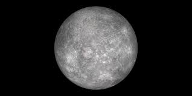
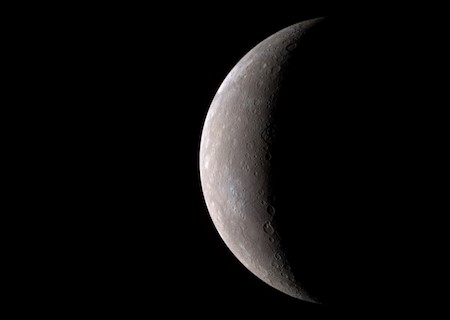
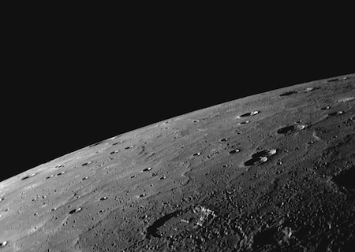

MERKÜR
Merkür, Güneş Sistemimizdeki en küçük gezegendir. Ay’dan sadece biraz daha büyüktür. Güneş’e
en yakın gezegen olmasına rağmen en sıcak gezegen unvanı Venüs’e aittir.

Merkür, Dünya ve Mars ile beraber en kayalık gezegenlerden biridir. Katı yüzeyi kraterler ile
kaplıdır, atmosferi ve uydusu yoktur. Bu küçük gezegen, Dünya’ya göre kendi etrafında daha
yavaş döner. Bu yüzden bir gün Merkür’de daha uzun sürer. Merkür’ün bir günü Dünya’nın yaklaşık
59 gününe eşittir. Fakat bunun yanında Güneş’e en yakın gezegen olmasından dolayı (gitmesi
gereken mesafe daha kısadır) bir yıl Merkür’de 88 Dünya gününe eşittir. Merkür’ün yavaş dönüşü
ve
kısa yıl süresinden dolayı Merkür’de bir gün Dünya’dan çok farklıdır. Güneş’in doğması
ve batması uzun süre alır. Bu yüzden Merkür’de 180 Dünya gününde bir Güneş’in doğuşunu görebilirsiniz.

Merkür'ün hafif gri olduğunu görebilirsiniz (Kaynak:NASA)

NASA'nın MESSENGER uzay aracından Merkür'ün kuzey ufuğu
Fotoğrafın altına doğru yıldız şekline benzeyen kraterin ismi "Debussy" (Kaynak:NASA)
Kaynak: NASA